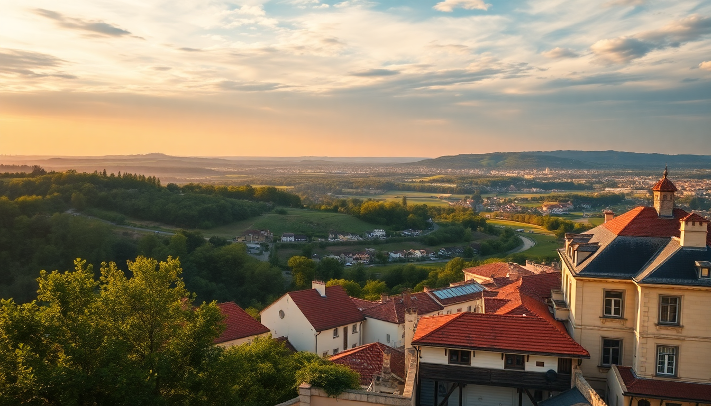

10 Days in France: Paris, Loire Valley & Provence

We spent ten days racing through three of France’s most distinct regions — Paris, the Loire Valley, and Provence — and came away with a clear sense of what works and what doesn’t. This itinerary is what we actually did, tweaked for sanity. You’ll need a rental car for the Loire and Provence legs, but the train between Paris and Avignon is a no-brainer. Here’s how we pulled it off without burning out.
Why combine Paris, the Loire Valley, and Provence in one trip?
These three regions are close enough to chain together without wasting full days in transit. Paris gives you the city energy, the Loire Valley offers a slow-down with châteaux and wine, and Provence delivers that sun-drenched hill-town vibe. The key is not to overpack each stop. We did three nights in Paris, two in the Loire, and four in Provence — that felt tight but doable.
- Paris to Loire Valley: 1-hour train from Gare Montparnasse to Tours or Saint-Pierre-des-Corps, then pick up a rental car.
- Loire Valley to Provence: Drive back to Paris (or take a train from Tours to CDG) and catch a high-speed TGV to Avignon. Total travel time: about 4 hours.
- Provence back to Paris: Direct TGV from Avignon TGV station to Paris Gare de Lyon in 2h40m.
What’s the best way to spend 3 days in Paris?
We landed at Charles de Gaulle and took the RER B directly to our hotel near Gare du Nord. That station is a hub for the Métro and RER, but the neighborhood can feel grimy at night. Next time we’d stay in Le Marais or near Saint-Germain-des-Prés for walkability and better café density.
Day one we hit Musée d’Orsay instead of the Louvre — smaller, less crowded, and the Impressionist collection is unmatched. For lunch, we grabbed sandwiches at Carette near Place du Trocadéro. Overpriced, but the view of the Eiffel Tower from the terrace is the real draw.
- Morning walk: Start at Rue des Rosiers in Le Marais for falafel at L’As du Fallafel.
- Evening: Book a Seine river cruise with a glass of wine — the Vedettes de Paris boats are smaller and less touristy than Bateaux Mouches.
- Skip: The line for the Eiffel Tower elevator. Walk up the stairs to the first level for a cheaper ticket and better leg workout.
Is the Loire Valley worth the detour from Paris?
Yes, but only if you rent a car and limit yourself to two châteaux. We made the mistake of trying to see four in one day and ended up château-blind by 3 PM. Château de Chambord is the most impressive — that double-helix staircase Leonardo da Vinci supposedly designed is real. Château de Chenonceau, with its gallery spanning the Cher River, is more intimate and photogenic.
We stayed at Le Clos d’Amboise in Amboise, a small hotel with a garden and pool. The town itself is walkable and has a good market on Fridays. For dinner, L’Épicerie in Amboise serves solid local fare without the tourist markup.
- Wine tasting: Stop at Domaine de la Chevalerie in Restigné for a no-frills tasting of Bourgueil reds.
- Lunch: Pack a picnic from the Amboise market and eat it on the banks of the Loire near the Île d’Or.
- Drive time: Chambord to Chenonceau is about 45 minutes. Don’t skip the back roads through vineyards.
How do you get from the Loire Valley to Provence without losing a day?
We took a morning TGV from Tours to Avignon with a change in Paris. It sounds inefficient, but the connection at Gare de Lyon is easy — just follow the signs for the TGV platforms. Total door-to-door time was about 5 hours, including a coffee break at the station.
Once in Avignon, we picked up another rental car at the Avignon TGV station (Sixt and Europcar both have desks there). The drive to our base in Saint-Rémy-de-Provence took 20 minutes. We stayed at Hôtel du Soleil, a three-star with a pool and views of the Alpilles. Simple, clean, and the staff pointed us to a bakery around the corner for morning croissants.
- Avignon: Don’t skip the Palais des Papes, but buy tickets online to skip the queue. The audio guide is worth it.
- Saint-Rémy: Walk the Route de Glanum to see Roman ruins that are free and nearly empty.
- Market day: Saint-Rémy’s Saturday market is huge. Go early (before 9 AM) to avoid the crowds.
What are the must-do experiences in Provence beyond the lavender fields?
We visited in late June, so lavender was just starting to bloom near Abbaye de Sénanque in Gordes. The abbey itself is photogenic, but the crowds are brutal by 11 AM. Go at 8 AM or skip it and drive the back roads around Valensole — the fields there are bigger and less fenced off.
The Carrières de Lumières in Les Baux-de-Provence is a multimedia art show projected inside an old quarry. We almost skipped it because it sounded gimmicky, but it was genuinely impressive — the Van Gogh exhibition was immersive without being cheesy.
- Hike: The Alpilles trails near Saint-Rémy are well-marked and offer views of Mont Ventoux on clear days.
- Food: Le Bistrot des Alpilles in Saint-Rémy serves a lamb tagine that beats most Parisian restaurants.
- Wine: Stop at Château d’Estoublon near Fontvieille for a tasting of their rosé. The property is gorgeous.
How do you handle driving and parking in Provence?
Renting a car in Provence is essential, but parking in hill towns like Gordes and Roussillon is a nightmare in summer. We parked in the free lot at the bottom of Gordes and walked up — it’s steep but only 10 minutes. In Avignon, we parked at the Parking Palais de l’Ombrière near the city walls, which is underground and reasonably priced.
- Tolls: Most highways in Provence are toll roads. Keep €20-30 in cash for the automated booths.
- Gas stations: Self-service pumps accept credit cards with a chip. If your card doesn’t work, go to a staffed station.
- Navigation: Google Maps worked fine, but we downloaded offline maps for the Alpilles area where signal drops.
FAQ
Is 10 days enough for this itinerary? Yes, but you’ll feel rushed if you try to add more stops. Stick to three nights in Paris, two in the Loire, and four in Provence. That gives you one full day in the Loire and three full days in Provence, which is enough for the highlights without burnout.
What’s the best time of year to go? Late May to mid-June offers good weather, fewer crowds, and early lavender blooms. July and August are sweltering in Provence and packed with tourists in Paris. October is pleasant but the lavender is gone and some Loire châteaux close early.
Do I need to book train tickets in advance? Yes. TGV tickets from Paris to Avignon can double in price if bought on the day. Book at least two weeks ahead on the SNCF website or via Trainline. For the Loire Valley leg, regional trains are cheaper and don’t require advance booking, but the TGV from Tours to Paris does.
Conclusion
- Paris: Stay in Le Marais or Saint-Germain, skip the Louvre queue, and do a Seine cruise at sunset.
- Loire Valley: Rent a car, see Chambord and Chenonceau, and stay in Amboise for the market and local restaurants.
- Provence: Base yourself in Saint-Rémy, hit the Carrières de Lumières, and drive the Valensole lavender roads early.
- Transfers: Use the TGV for Paris-Avignon, and rent cars locally in the Loire and Provence — don’t drive from Paris.
- Pace: Two châteaux max per day, one market per stop, and always book dinner reservations in advance during peak season.